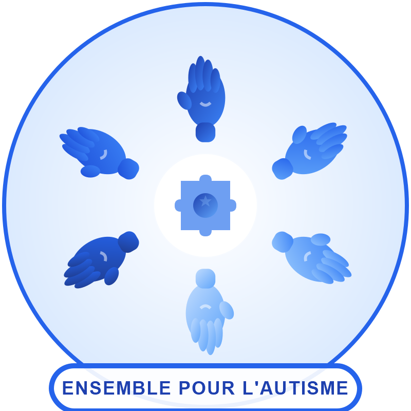
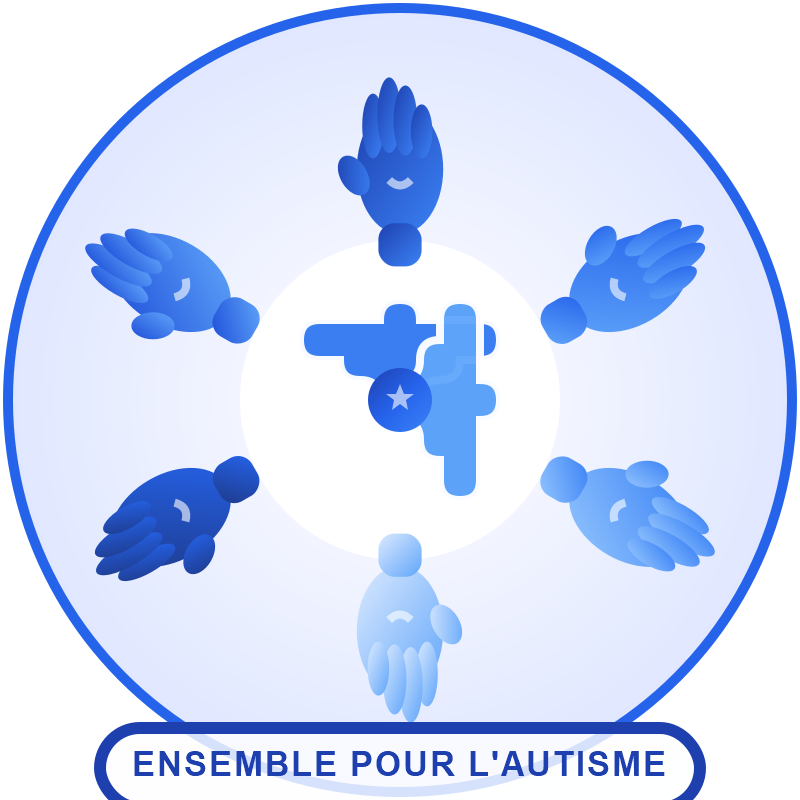
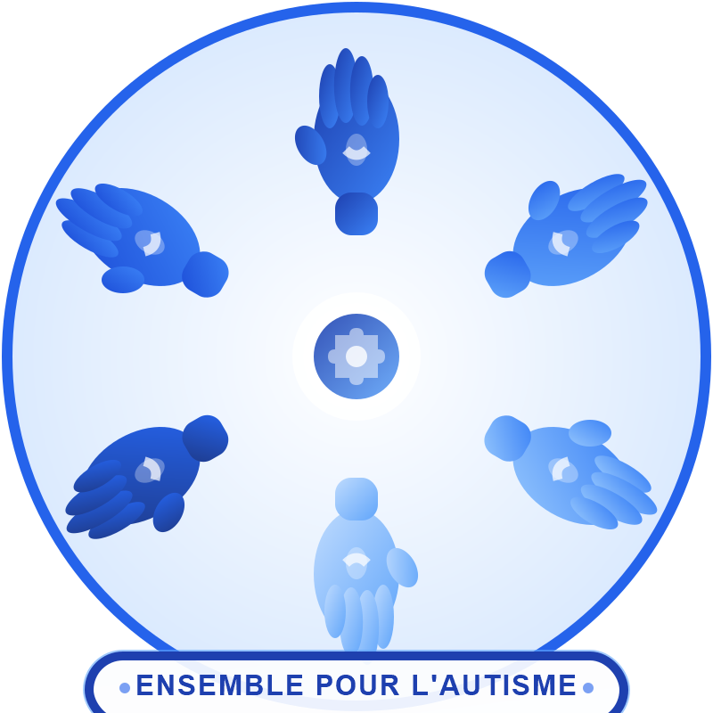

� Propositions de Modification du Logo V2
Plateforme des Associations d'Autisme au Sénégal
Trois variations épurées mettant en valeur les mains de solidarité, utilisant exclusivement les couleurs du bleu autisme, avec suppression des éléments décoratifs.
✨ Modifications Demandées
- Couleurs pures de l'autisme : Palette bleu exclusivement (#1e40af → #dbeafe)
- Mains agrandies : Symbole de solidarité en premier plan (échelle augmentée)
- Suppression des bonshommes : Design épuré et professionnel
- Étoile discrète ou absente : Moins d'évidence sur les éléments décoratifs
📊 Comparaison avec le Logo Original V2
Caractéristiques du Logo Original
- 6 mains en cercle (échelle 0.85 - taille moyenne)
- 3 bonshommes représentant les enfants
- Étoile proéminente avec effet lumineux
- Puzzle central à 4 pièces
- Cercles décoratifs en pointillés
- Couleurs bleu autisme + éléments verts/jaunes
Focus Mains Géantes
"La solidarité au premier plan"

🎨 Caractéristiques
- Mains agrandies : Échelle 1.2 (vs 0.85)
- Puzzle central simplifié : 4 pièces compactes
- Étoile minuscule : Taille réduite, opacité 30%
- Bonshommes supprimés : Design épuré
- Couleurs 100% bleu autisme : 6 gradients bleus
✓ Points Forts
Design équilibré gardant les éléments essentiels. Les mains sont bien visibles sans écraser le centre. Le puzzle reste identifiable comme symbole de l'autisme. Idéal pour une transition douce du logo original.
Mains Très Grandes + Puzzle Dominant
"L'autisme au cœur de la solidarité"

🎨 Caractéristiques
- Mains extra grandes : Échelle 1.35 (impact visuel fort)
- Puzzle central détaillé : 4 pièces grandes et visibles
- Étoile intégrée au puzzle : Subtile au centre (opacité 60%)
- Bonshommes absents : Focus professionnel
- Effet lumineux renforcé : Glow sur le puzzle
✓ Points Forts
Le meilleur équilibre entre mains et symbole central. Le puzzle est grand et clairement identifiable. Les mains forment un cadre puissant. L'étoile est présente mais discrète, intégrée harmonieusement au puzzle central.
Mains Monumentales
"La puissance de l'union"

🎨 Caractéristiques
- Mains monumentales : Échelle 1.5 (maximum)
- Symbole central minimal : Petit cercle avec mini puzzle
- Pas d'étoile visible : Épuration totale
- Design ultra-épuré : Mains comme élément principal
- Détails renforcés : Reflets sur les paumes
✓ Points Forts
Design le plus audacieux et moderne. Les mains dominent complètement le logo, créant un impact visuel très fort. Parfait pour affirmer le message de solidarité et d'union. Design contemporain et minimaliste, très professionnel.
💡 Recommandation Finale
La Proposition 2 offre le meilleur compromis : mains très grandes et impactantes, puzzle central bien visible pour l'identité autisme, et étoile subtile intégrée de façon élégante.
La Proposition 1 convient pour une transition douce. La Proposition 3 est idéale pour un impact maximal et un design ultra-moderne centré sur la solidarité.